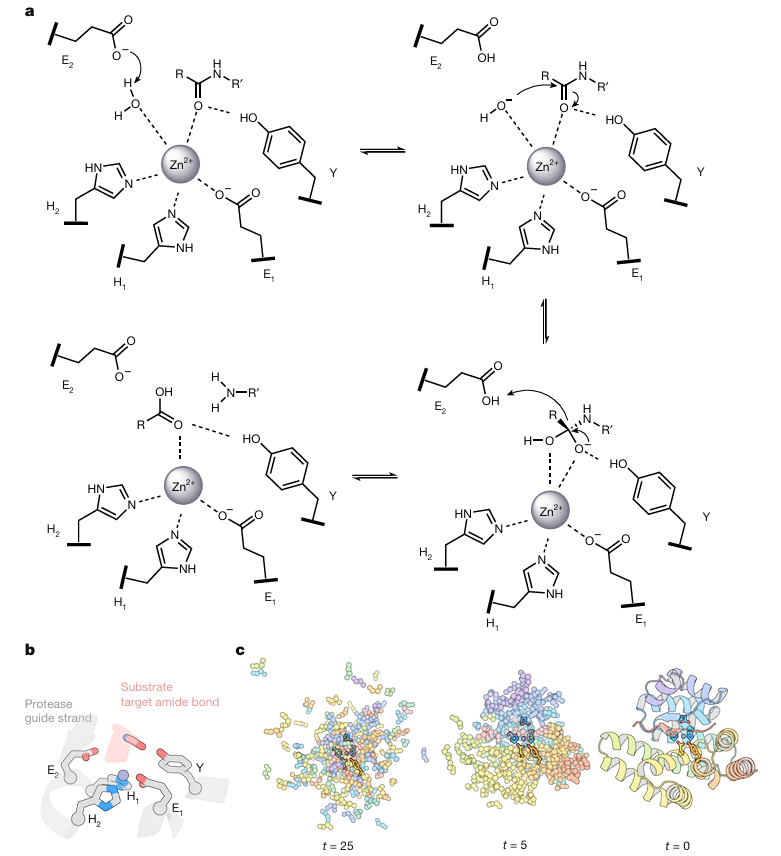
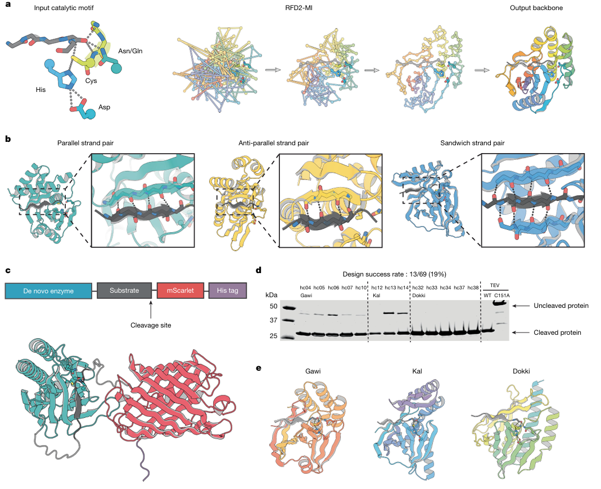
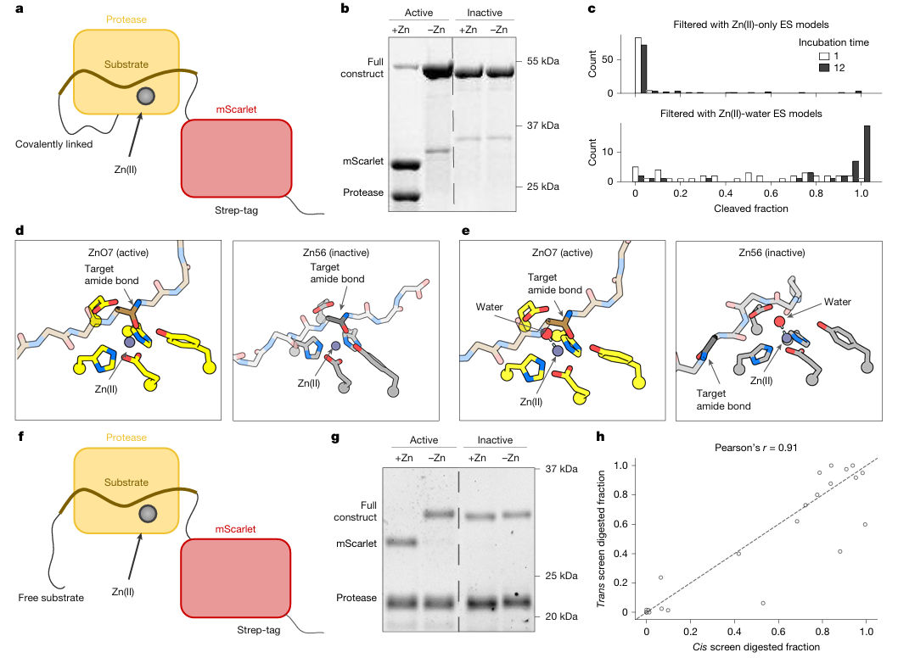
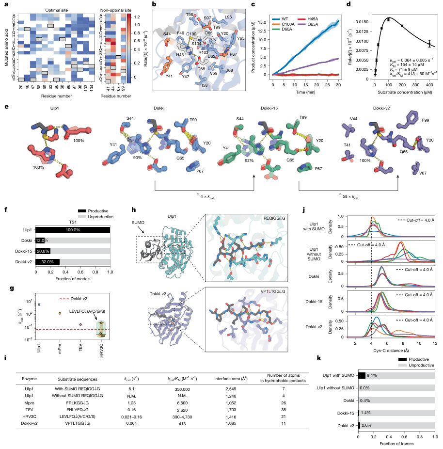
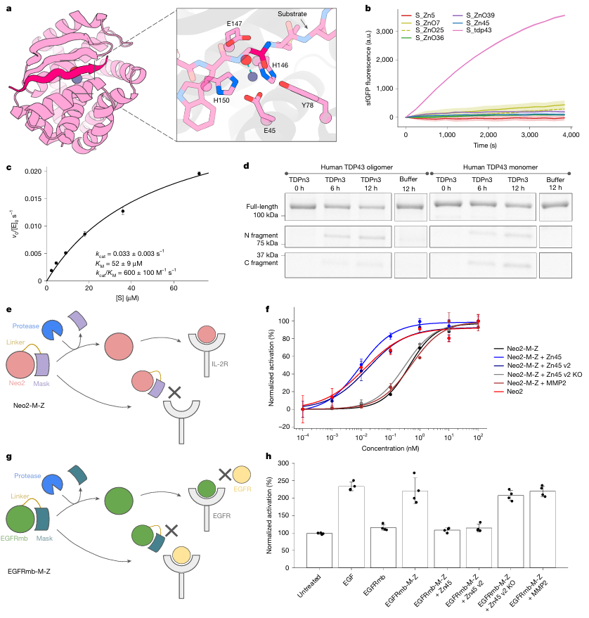

蛋白设计里，做出一个能结合靶点的蛋白，和做出一个能在指定位置切开底物的蛋白，中间隔着很长一段路。
结合问题主要在问界面是否匹配。蛋白酶多了几道同时成立的条件。底物要以对的方向进入口袋，待切的酰胺键要落在可反应的位置，催化残基或金属配位水要处于合适的化学状态，过渡态还要被稳定下来。任何一项轻微走样，蛋白即使折得很好、底物也能结合，反应仍可能几乎不发生。
我把 Baker Lab 最近这两篇 Nature 放在一起看，最想讨论的便是这个落差。一篇从半胱氨酸出发设计半胱氨酸蛋白酶，另一篇从锌离子和配位水出发设计金属蛋白酶。它们都使用了扩散式骨架生成、序列设计和 AlphaFold 3 筛选，也都做了扎实的湿实验、晶体结构或细胞层面的验证。
两篇文章给我的感觉很一致。AI 已经可以把蛋白酶的设计对象推进到一段具体的催化场景，里面有底物、反应中心和局部几何。后面的难点随之集中到活性位点的微观构象，以及底物在反应时那一瞬间能否被摆到位。
先把两篇文章放在一张小表里。这里不把活性数字排成排行榜，催化机制、筛选策略和测定条件并不相同，直接横比容易失真。
这两篇工作都建立在 RFD2-MI 的框架上。它和只生成一个稳定蛋白骨架的任务不同，输入里预先放入了催化基团和一段底物主链，再围绕这套局部几何生成支架。随后用 ProteinMPNN 或其变体同时设计酶和对应底物的序列，最后用 AlphaFold 3 检查 apo 状态和复合物状态能否回到预期几何。
这套流程有一个很重要的变化。设计者不再只问某个蛋白能否折叠，而是给模型一个带有反应条件的局部约束。蛋白如何折、底物如何贴上来、活性位点朝哪里摆，都需要一起被考虑。

配图结论 这张图把设计输入讲得很清楚，RFD2-MI 从催化基团和底物的相对几何开始生成支架，而不是先得到一个通用折叠，再事后寻找活性位点。
《De novo design of cysteine proteases》借用了酵母 Ulp1 蛋白酶中经过验证的反应几何。核心是由 Cys、His 和 Asp 组成的催化三联体。Cys 作为亲核体攻击肽键，His 和 Asp 调节其反应性，氧阴离子孔为反应中间体提供稳定作用。作者同时固定了底物附近四个主链残基的构象，让模型围绕酶和底物的接触面生成全新的蛋白骨架。
这一点值得细看。天然蛋白酶的活性不是只由三联体的三个残基决定。底物切割位点附近的主链方向、氧阴离子孔的供氢位置、His 的转子构象，都要落在一个很窄的范围内。把 Cys、His、Asp 三个字母放进一个稳定蛋白里相对容易。让它们在反应过程中反复保持一组可用的相对位置，难度高得多。
作者从 69 个实测设计中得到 13 个有活性的分子，命中率约 19%。最好的设计对肽键水解的速率增强达到 3 × 10^7 倍。六个设计的晶体结构与设计模型接近，Cα RMSD 小于 1.2 Å，说明这些新支架本身并没有明显折错。
这个结果恰好给出了一条很有用的研发判断。结构接近设计模型，是催化设计的必要条件，却不能替代活性判断。静态晶体结构能告诉我们催化残基曾经处在合理位置，却不能完整回答它在溶液中有多少时间处于可反应构象。

配图结论 作者把催化三联体、氧阴离子孔和底物主链作为共同约束，并在实验筛选中得到 13 个活性设计，说明这条从局部化学几何出发的路线已经可以产生可工作的蛋白酶。
《Computational design of metalloproteases》采用的是另一种催化方案。锌离子由两个 His 和一个 Glu 配位，另一枚 Glu 帮助活化锌配位水，Tyr 参与稳定反应过程中的氧阴离子。作者还让底物在活性位点附近形成类似 β 链配对的主链氢键，从而约束待切肽键的位置。
论文中我最在意的细节是一颗水分子。
最初的 AlphaFold 3 模型里，作者只把锌写成 [Zn+2]。这个表示法没有带上亲核水。后来他们改成 Zn 加水的复合表示，让模型显式看到金属配位水，筛选活性设计和排除失活设计的能力都有改善。
这听起来像一个很小的建模处理，实际上击中了酶设计里常被忽略的边界。模型看到的化学实体，决定了模型能够维持和判断的局部几何。若亲核水没有进入表示，后续的置信度和结构相似性分数再漂亮，也无法直接证明反应所需的水被放在了该在的位置。
作者一共测试了 135 个设计，其中约 36% 能催化对应底物在目标肽键处切割。最佳设计相对于未催化的水解反应，速率增强超过 10^8 倍。对部分设计再做四个活性位点周围的替换后，增强可超过 10^10 倍。论文还展示了 TDP-43、淀粉样 β 蛋白和血清淀粉样 A 等相关底物的切割，以及通过蛋白酶解锁笼化细胞因子或受体拮抗剂的细胞实验。
这些实验很重要，但应当放在合适的尺度上理解。它们证明了设计蛋白酶能够完成预定切割和细胞报告层面的功能控制，离药物研发中的递送、选择性、体内暴露、免疫原性和安全窗仍有一段很长的验证路径。

配图结论 显式加入锌配位水后，结构筛选对活性与失活设计的区分更有效，催化设计需要把反应中参与进来的化学实体写进模型。
两种路线的化学不同，作者最后遇到的限制却很接近。
半胱氨酸蛋白酶论文对 Dokki 设计做了进一步突变优化。Y41T、S44V、P67V、T99F 等替换提升了催化效率。分子动力学结果显示，优化后体系中 Cys、His、氧阴离子孔和底物更常进入符合反应要求的构象。作者也将设计酶与 Ulp1、Mpro、TEV 和 HRV3C 等天然半胱氨酸蛋白酶作了比较，指出设计蛋白的残余差距主要来自活性位点预组织和底物结合定位。
我比较认同这个判断。许多结构模型擅长给出一个低能量、看上去合理的构象，但催化需要的往往是一群构象中的少数成员。一个 His 侧链稍微转开，Cys 的去质子化机会降低，底物肽键偏了几埃，都会让反应速率掉下去。对于结合设计，局部偏差可能仍能维持结合。对于酶设计，这样的偏差会直接落在 kcat 或 kcat/KM 上。
金属蛋白酶论文也呈现了类似的过程。晶体结构显示若干设计的整体骨架和活性中心接近原始模型。后续围绕活性位点的替换、结构分析和分子动力学，再把一部分设计推到更高活性。这里的计算没有替代实验。它的作用更像提出一组能被实验检验的局部几何假设，再由实验找出哪些构象安排在真实体系中站得住。

配图结论 Dokki 的突变优化和构象分析说明，静态结构接近设计还不够，能够进入并维持可反应微观构象的比例决定了催化性能。
从 AIDD 的角度看，我不会把这两篇文章理解为蛋白酶设计已经进入常规化阶段。它们更像把问题定义得更清楚了。
第一，生成模型可以承担很重的结构搜索工作。它能在给定催化基序与底物几何的条件下，探索天然蛋白未必用过的支架空间。两篇文章中的设计折叠与天然蛋白酶相差很大，半胱氨酸蛋白酶工作中设计骨架和天然蛋白酶的 TM-score 小于 0.5。这部分能力对于扩展可设计空间很有价值。
第二，评价函数的对象要跟任务一起升级。蛋白结合项目可以重点看界面、折叠置信度和特异性。酶项目还要追踪化学状态、配位水、底物反应键的朝向、局部柔性，以及 apo、底物结合态和过渡态类似物状态之间是否一致。金属蛋白酶里那颗水分子已经说明，遗漏一个参与反应的实体，筛选方向就可能偏掉。
第三，实验反馈仍然很难被绕开。作者做了底物切割测定、关键残基突变、晶体结构、质谱确认和细胞报告实验。计算给出了可测试的候选和解释路径，实验负责把结构像不像、是否真的切开、切在哪里、活性能否优化逐一落下来。对企业研发而言，这类工作更适合作为定向发现与工程优化的起点，不能把计算分数直接当成开发候选物的结论。

配图结论 设计蛋白酶已经能作用于疾病相关蛋白和笼化生物调节分子，但这里展示的是体外切割与细胞功能读出，还不能等同于治疗效果。
这两篇文章最值得记住的地方，不是“AI 设计出了蛋白酶”这句话。更具体的进展是，设计任务开始把折叠、底物识别和化学反应放到同一个约束里处理。
它们也把后续工作指向了更难的一段。模型需要更可靠地处理水、金属离子、质子化状态和构象集合。筛选阶段需要将结构置信度、反应几何和实验可制造性分开看。实验阶段则要持续回答切割位点是否干净、底物谱是否可控、活性在复杂环境里是否仍能保留。
如果把这两篇论文当作蛋白酶设计的坐标，它们已经把坐标从“能否生成一个像酶的蛋白”推到了“能否为一段指定肽键安排一套可工作的化学环境”。接下来决定实用价值的，会是这套环境在真实生物体系里能否稳定、专一且可控地工作。
Computational design of metalloproteases
De novo design of cysteine proteases